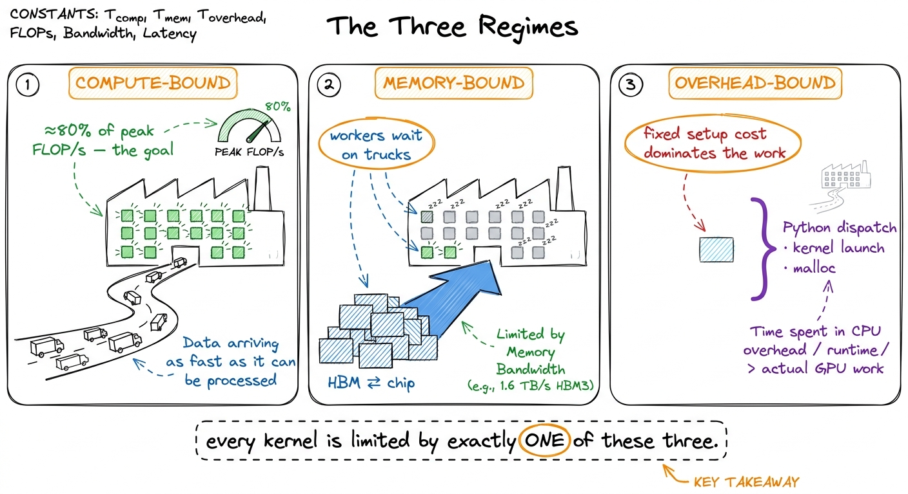
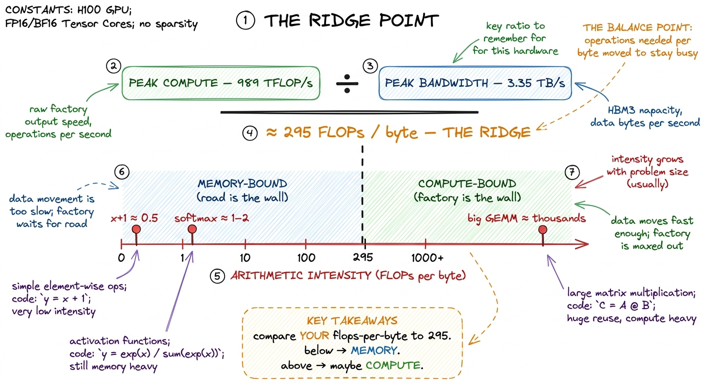
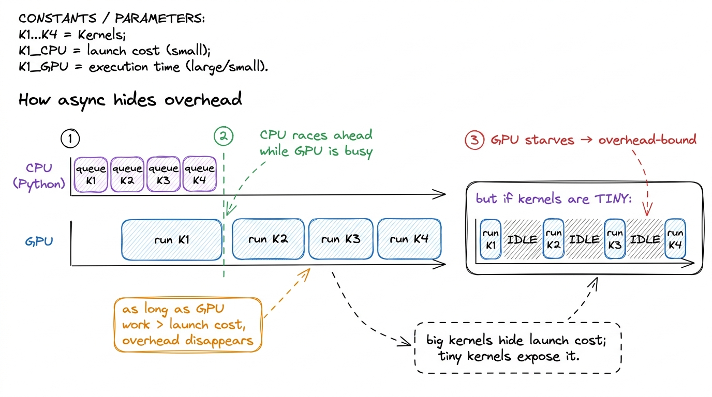
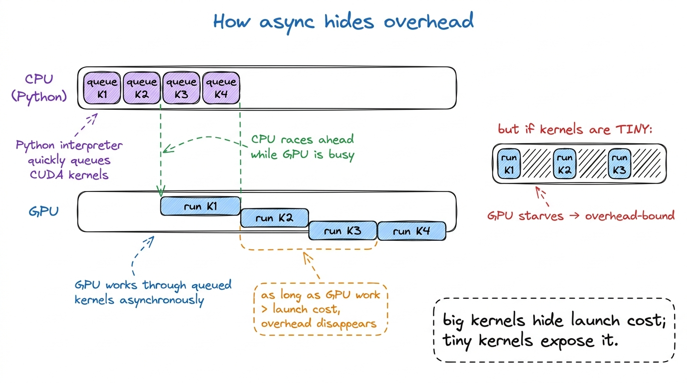
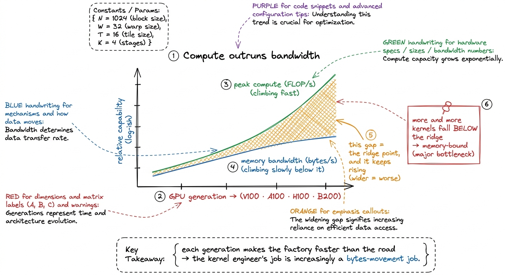
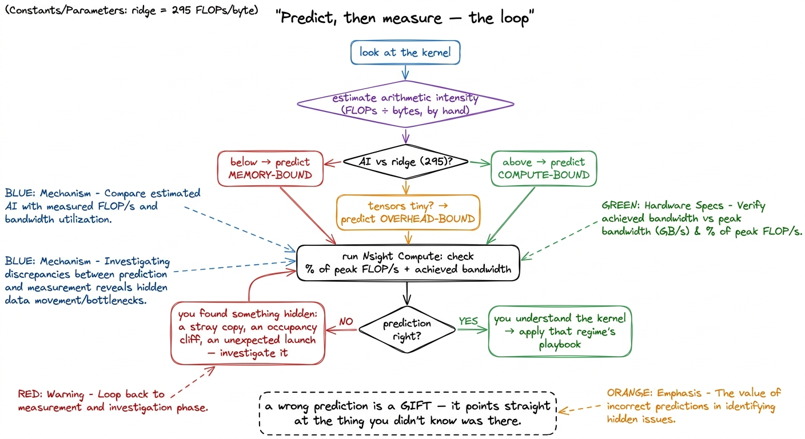

The three regimes: compute, memory, overhead BRRR
Here is a claim that sounds too strong until you have lived it: almost every performance problem you will ever have on a GPU comes down to one of three things, and you can usually figure out which one in under a minute. Not a hundred subtle causes. Three. Learn to name the one that's biting you, and the fog of "how do I make this faster?" clears into a short, obvious to-do list. Name the wrong one, and you can work all week and move nothing.
This article is about that skill: looking at a piece of GPU code and asking the single most useful question in all of performance engineering — what is it waiting on?1 This whole framing comes from Horace He's "Making Deep Learning Go Brrrr From First Principles", which is required reading and which this article rebuilds slowly, from zero, with the numbers worked out by hand.
Let me promise you the payoff up front. By the end you will be able to glance at a kernel — a matrix multiply, a softmax, a + 1, whatever — predict which of the three walls it's about to hit, estimate roughly how fast it can possibly go, and know which optimizations are worth trying and which are a waste of your afternoon. That prediction, made out loud before you measure anything, is the spine of every worklog on this site.
Starting from zero: what a GPU actually does all day
Before we can talk about what a kernel waits on, we need a crisp picture of what work even means here. So let's build one from nothing.
A GPU does exactly two kinds of things. It computes — it multiplies and adds numbers in its arithmetic units. And it moves data — it hauls those numbers between where they're stored and where they're computed on. That's it. Every kernel is some braid of "fetch these numbers" and "do math on them." The entire art of this field is keeping the expensive math units fed so they never sit around waiting for numbers to show up.
Here's the mental model I want you to hold for the rest of the article, and it comes straight from Horace He: think of the GPU as a factory with a distant warehouse.
 figure rendering · The core mental model. The factory (compute) is fast. The warehouse (m
figure rendering · The core mental model. The factory (compute) is fast. The warehouse (mThe factory is where math happens. It's fast — dazzlingly fast — but it's small; it can only hold a handful of numbers at a time. The warehouse is your GPU's main memory, called HBM (High-Bandwidth Memory), and it's where all your big tensors actually live. It's roomy — an H100 has 80 GB of it — but it's far away in the sense that getting a number from the warehouse to the factory takes real time. Between them runs a road with a fixed number of lanes. No matter how fast the factory is, it can only get raw material as fast as trucks arrive down that road.
Keep this picture. We will hang everything on it.
The three walls, named
Now the payoff of the picture. There are exactly three ways a kernel can be slow, and each maps onto one part of the factory story.
Compute-bound. The factory is running flat out. Trucks are arriving fast enough to keep every workstation busy, and the thing limiting you is simply how much math the factory can chew through per second. You are pulling a real fraction of the chip's peak math rate, the tensor cores are lit, and the only way to go faster is to do less math or use a faster kind of math unit. This is the regime you want. It means the extremely expensive silicon you rented is doing extremely-expensive-silicon things.
Memory-bandwidth-bound. The factory is mostly idle, workers standing around, because the road can't deliver raw material fast enough. You're spending your time moving bytes down the road, not computing on them. The classic example: an element-wise x + 1. For every number, you drive a truck out to fetch it, do a single trivial addition, and drive a truck back to store it. Two trips down the road for one flop of work. It does not matter how many workstations the factory has — they sit idle while the trucks crawl.2 This is exactly why operator fusion is the single highest-leverage inference optimization: it removes the round-trips to HBM between cheap element-wise ops so the numbers stay in the factory. See [[operator-fusion.]]
Overhead-bound. Nothing is happening in either place, because you're stuck on paperwork before the job even reaches the factory. Python interpreter time, framework dispatch, kernel-launch latency, an accidental cudaMalloc. When your tensors are tiny, the fixed cost of getting a job to the GPU at all dwarfs the actual work. You can be overhead-bound on the most powerful supercomputer ever built — the machine is idle, waiting on your CPU to hand it the next tiny task.

figure rendering · The three regimes as three states of the factory: workers busy, workerThree walls. Every kernel you ever profile is pressed against one of them. So the whole game becomes: which wall?
The single ratio that tells you the answer
Let me hand you the master diagnostic, because it's almost embarrassingly simple.
Measure the math rate — the FLOP/s, floating-point operations per second — that your kernel actually achieves. Divide it by the GPU's peak FLOP/s. That fraction is your answer.
If you're hitting 80% of peak, then by definition you are at least 80% compute-bound. The factory is nearly maxed. There's very little left to win, and any effort should go into doing less math, not into shuffling memory. If instead you're hitting 3% of peak — and you will see numbers like this constantly, it's completely normal for a first draft — then you are emphatically not compute-bound. Adding more math horsepower will do exactly nothing, because the math units are already idle 97% of the time. You're waiting on the road, or on paperwork.
I want to pause on why this is such a good diagnostic, because it surprised me the first time. It's one number, and it's self-normalizing. You don't need to know anything about your specific kernel to interpret it. "Fraction of peak FLOP/s" already folds in the size of your problem, the cleverness of your code, everything. Low fraction → you are memory- or overhead-bound and no amount of compute tricks will help. High fraction → you're compute-bound and memory tricks are a rounding error. The number tells you which half of your toolbox to even open.
But there's a better trick still. You can predict the regime before you write a single line, by comparing two hardware numbers to one property of your workload. Let's derive that now, by hand.
Predicting the regime before you code: the ridge point
The hardware gives you two headline numbers. Call them the two capabilities of our factory.
First, peak compute: how many FLOPs per second the math units can do. An H100 does about 989 TFLOP/s of BF16 math through its tensor cores.3 These are realistic SXM H100 numbers with tensor cores in the sparsity-free regime. NVIDIA's marketing slides often quote ~2× higher by assuming structured sparsity you almost never actually have. Always halve the glossy number in your head. That's 989 × 10¹² multiply-adds every second. Absurd.
Second, peak bandwidth: how fast the road can move bytes. An H100's HBM3 delivers about 3.35 TB/s — 3.35 × 10¹² bytes per second. Also absurd, but in a smaller way.
Now here is the move. Divide compute by bandwidth:
989 × 10¹² FLOP/s
───────────────────── ≈ 295 FLOPs per byte
3.35 × 10¹² bytes/sStare at that number. It's a rate divided by a rate, so the seconds cancel and you're left with FLOPs per byte — a pure property of the machine. It says: in the time this GPU can bring in one byte from the warehouse, it could have done about 295 floating-point operations. This is the machine's ridge point, and it's the break-even line of the whole field.4 The exact ridge depends on precision and chip. For FP32 on the A100 in Horace's original post, peak is ~19.5 TFLOP/s over ~1.5 TB/s, giving a ridge near 13 FLOPs/byte — over twenty times lower than the H100 BF16 tensor-core ridge. The ridge is not one number; it's one number per (chip, datatype) pair. See [[roofline-model and [[arithmetic-intensity]].]]
The interpretation is beautiful and stark. If your kernel does fewer than ~295 FLOPs for every byte it touches, then the math units will always finish before the next byte arrives, and you are memory-bound — full stop, no matter how you write the arithmetic. If it does more than ~295 FLOPs per byte, the road can keep the factory fed, and you have a shot at being compute-bound.

figure rendering · Divide peak compute by peak bandwidth and you get the ridge point: theThat workload property — FLOPs performed per byte moved — has a name: arithmetic intensity. It's the single number about your code that decides which wall you hit. Let's compute it for real cases, by hand, so it stops being abstract.
Working the two extremes by hand
Take the two ends of the spectrum. I'll count FLOPs and bytes explicitly, because doing it once cements it forever.
Case 1: a big square matrix multiply. Multiply two N × N matrices, C = A @ B. How much math? Each of the N² output elements is a dot product of length N, and a dot product of length N is N multiplies plus N adds — about 2N FLOPs. So total math is N² × 2N = 2N³ FLOPs. How much data? You have to read A (N² numbers), read B (N² numbers), and write C (N² numbers) — about 3N² numbers, and in BF16 that's 2 bytes each, so 6N² bytes.
Arithmetic intensity is math over bytes:
2N³ FLOPs
────────── = N/3 FLOPs per byte
6N² bytesThe cubic on top and the square on the bottom mean intensity grows with N. For N = 4096, that's roughly 1365 FLOPs per byte — comfortably past the ridge of 295. Big GEMMs are compute-bound. This is why matrix multiply is the darling of the GPU: the bigger it gets, the more math you extract per byte you haul, and the factory stays saturated.5 The naïve N/3 assumes each input is read exactly once, which no real kernel achieves without tiling — a one-thread-per-output GEMM re-reads a whole row and column per element and has intensity closer to 0.25 FLOPs/byte, deeply memory-bound. The entire GEMM tiling ladder on this site exists to recover that theoretical intensity by reusing data in shared memory and registers. See [[gemm-kernel-3-shared-memory and [[gemm-kernel-5-2d-blocktiling]].]]
Case 2: an element-wise activation on that same N × N matrix — say y = x + 1, or a cos, or a ReLU. Math? One flop per element, so N² FLOPs. Data? Read x (N² numbers), write y (N² numbers) — 2N² numbers, or 4N² bytes in BF16.
N² FLOPs
────────── = 0.25 FLOPs per byte
4N² bytesThat's it. 0.25. A constant, no growth, over a thousand times below the ridge. Element-wise ops are hopelessly memory-bound, and no tensor core on Earth will save them, because you're reading a byte to do a quarter of a flop with it. The factory is a cathedral and you're using it to add one to a number and mail it back.

figure rendering · Same matrix, two kernels. The GEMM's intensity grows with N and clearsNotice what just happened. We predicted the regime of two kernels with arithmetic alone — no profiler, no code, no GPU even plugged in. That's the whole power of the ridge point: it turns "will this be fast?" into a one-line division you can do on a napkin.
Why this decision collapses your to-do list
Here's the part that makes the three regimes worth memorizing. Once you know your regime, the menu of useful optimizations shrinks to almost nothing — and a short menu is a gift, because it means you stop flailing.
If you're memory-bound, your entire job is to move fewer bytes, or reuse the ones you've moved. So: you fuse adjacent ops so intermediates never hit HBM; you cache hot data in shared memory and registers; you drop to lower precision (FP8, INT4) so each number is fewer bytes on the road; you fix coalescing so each truck comes back full instead of half-empty. You do not reach for a faster math unit — the math units are already bored.6 "Coalescing" means arranging the 32 threads of a warp so their memory requests fall in one contiguous chunk, letting the hardware satisfy them in a single transaction instead of 32 scattered ones. A poorly-coalesced kernel can leave 90% of its trucks half-empty. See [[memory-coalescing.]]
If you're compute-bound, your job is the opposite. You reach for tensor cores, you pick the precision that runs fastest, you push occupancy up so the scheduler always has a warp ready to hide the little stalls. You do not obsess over a stray HBM read — you already have bytes to spare. See [[tensor-cores]] and [[occupancy]].
If you're overhead-bound, you attack the paperwork. You make bigger batches so each launch does more real work per unit of fixed cost. You fuse many tiny kernels into one launch. You use CUDA graphs to record a whole sequence of launches once and replay it without the per-launch CPU cost. See [[kernel-launch-anatomy]] and [[streams-and-async]].
Same effort, three completely different playbooks. Pick the wrong one and you're the person tuning tensor-core precision on a kernel that spends 97% of its life waiting for trucks.
The overhead regime deserves its own hard look
Compute and memory get all the glory, but overhead is where beginners lose the most time, so let's give it the by-hand treatment too — because the numbers here are genuinely shocking.
How slow is Python, really, next to a GPU? Horace gives the number that made me sit up: in the time it takes Python to complete a single addition, an A100 can perform on the order of 9.75 million floating-point operations. Read that again. One Python +. Nine and three-quarter million GPU flops burned as pure waiting.7 The exact figure depends on your interpreter and hardware, but the order of magnitude is the point: the CPU-side cost of deciding to do work is millions of GPU-flops. PyTorch's dispatcher, autograd bookkeeping, and shape checks all pile on top of raw Python.
So if you naïvely fire a thousand tiny GPU ops from a Python loop, each waiting on the last, you spend nearly all your wall-clock time in Python and framework dispatch, and the GPU idles between micro-tasks like a Ferrari at a toll booth. That's overhead-bound, and it's why a tiny model can run slower per-op than a huge one.
The rescue is subtle and worth understanding: PyTorch runs asynchronously. When you call a CUDA kernel, PyTorch doesn't wait for it to finish — it hands the kernel to the GPU's queue and immediately returns to Python to prepare the next one. So while the GPU chews on kernel N, the CPU is already queuing kernels N+1, N+2, N+3. As long as each GPU kernel takes longer than the Python overhead to launch it, the CPU stays ahead of the GPU and the overhead is completely hidden behind real work.8 This is also why timing GPU code with a naïve time.time() around a single op lies to you — the call returns before the GPU is done. You must torch.cuda.synchronize() first, or you'll measure launch latency and call it compute. See [[gemm-benchmark-methodology.]]

figure rendering · Asynchronous launch lets the CPU queue future kernels while the GPU ruThis is also, incidentally, the deepest reason batching works so well in inference: a bigger batch makes each kernel do more real GPU work, which raises the "GPU work per launch" ratio and buries the fixed Python cost under a mountain of actual computation. See [[prefill-vs-decode]] for how this plays out in an LLM serving loop.
Fusion: the memory-bound rescue, worked out
Let me make the memory-bound playbook concrete with the one optimization you'll use most, because seeing the bytes move is worth more than any definition.
Suppose you compute x.cos().cos() — cosine, then cosine again. Written the obvious way, that's two separate kernels. Kernel one reads x from HBM, computes cos, writes the intermediate back to HBM. Kernel two reads that intermediate back from HBM, computes cos again, writes the result to HBM. Count the road trips: 2 reads and 2 writes, four crossings of the warehouse road, for two trivial flops per element.
Now fuse them: write one kernel that reads x once, computes cos, and — while the number is still sitting in the fast factory registers — computes cos again, then writes the final result once. Road trips: 1 read and 1 write. Two crossings instead of four.
For a memory-bound op, wall-clock time is basically proportional to bytes moved down the road. So halving the crossings roughly halves the runtime — a clean 2× for free, with zero change to the math.9 The win scales with the length of the fused chain. Fuse a cos → cos → cos → cos chain and you go from 8 HBM crossings to 2 — a 4×. Real fusion opportunities (bias + activation + dropout, or the whole tail of an attention block) chain many cheap ops, which is why fused kernels dominate production. See [[operator-fusion.]]
That's the entire logic of fusion in one example, and it only makes sense once you know you're memory-bound. If these ops were compute-bound, fusing them would save nothing, because the bytes weren't the problem. The regime tells you whether the tool even applies.
Why the ground keeps shifting toward memory
There's a structural trend underneath all of this, and it's the reason the three-regimes skill gets more valuable every year rather than less.
Compute is growing faster than bandwidth. Every GPU generation piles on FLOPs faster than it piles on bytes-per-second. The factory keeps getting dramatically more workstations; the road only widens a little each time. Which means the ridge point keeps climbing. A kernel with intensity 100 that was comfortably compute-bound on an older chip can find itself below the ridge on a newer one — the newer factory is so fast that intensity 100 no longer keeps it fed.10 The H100→B200 jump added far more tensor-core throughput than HBM bandwidth, pushing the ridge higher again. The practical effect: the set of kernels that are "automatically" compute-bound keeps shrinking, and every memory-movement trick — fusion, better caching, lower precision — gets more valuable over time. See [[a100-h100-b200-whatchanged.]]

figure rendering · Compute has outpaced bandwidth for years. The ridge point keeps risingThe blunt summary: the kernel engineer's job is, more and more, a bytes-movement job wearing a compute-shaped hat. The factory is rarely the problem anymore. The road almost always is.
The one habit that ties it together
I'll leave you with the single discipline that turns all of this into a reflex, because knowing the three regimes matters far less than using them at the right moment — which is always the same moment: before you optimize anything, predict the regime out loud, then measure it.
Say it like this, in full sentences, before touching the profiler: "This is a small element-wise kernel. Its arithmetic intensity is about 0.25, way below the H100 ridge of 295, so it must be memory-bound. I expect maybe 3–5% of peak FLOP/s and something close to peak bandwidth. Fusion or lower precision should help; tensor-core tricks won't." Then open Nsight Compute and check.

figure rendering · The predict-then-measure loop. When your prediction is right you underWhen your prediction is right, you've confirmed you understand the kernel, and the regime hands you your short to-do list. When it's wrong — when you predicted memory-bound and see 40% of peak, or predicted compute-bound and see 4% — you've just uncovered something worth knowing: a hidden copy you didn't write, an occupancy cliff, a launch that snuck in, a layout that killed your coalescing. A wrong prediction is never a failure. It's a flashlight pointed exactly at the thing you didn't know was there.
That predict-then-measure loop is the spine of every worklog on this site. In the next articles we put the roofline model — the picture behind that "295 FLOPs per byte" line — formally on the wall (see [[roofline-model]] and [[speed-of-light-thinking]]), and then we start climbing the GEMM ladder from a first kernel that reaches a humiliating 1.3% of cuBLAS to a warp-tiled one that reaches 93.7%, one measured, predicted, profiled step at a time. Every rung of that ladder is really the same question asked again and again: what is it waiting on?